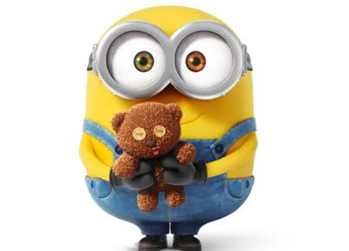
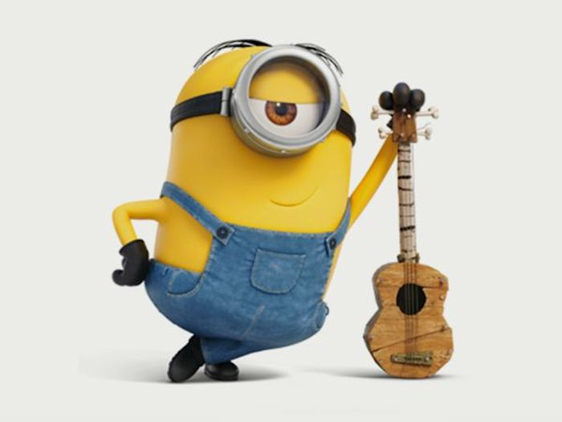

ボブ

ミニオンの中でもちょっと変わった存在。 ティムというぬいぐるみを持っていることが多い。 両目で違う色を持つオッドアイのミニオン。 身長が低く、つるつるとした頭が特徴的な可愛らしいミニオンです。
ケビン
ミニオンの頼れるリーダー的存在。勇敢で仲間を守る男気のあるミニオン。


スチュアート
ギター好きでクールな性格。（持っているのはウクレレ） ロックスターに憧れている。 バナナが大好きすぎてケビン・ボブをバナナと見間違えて食べようとしたことがある。